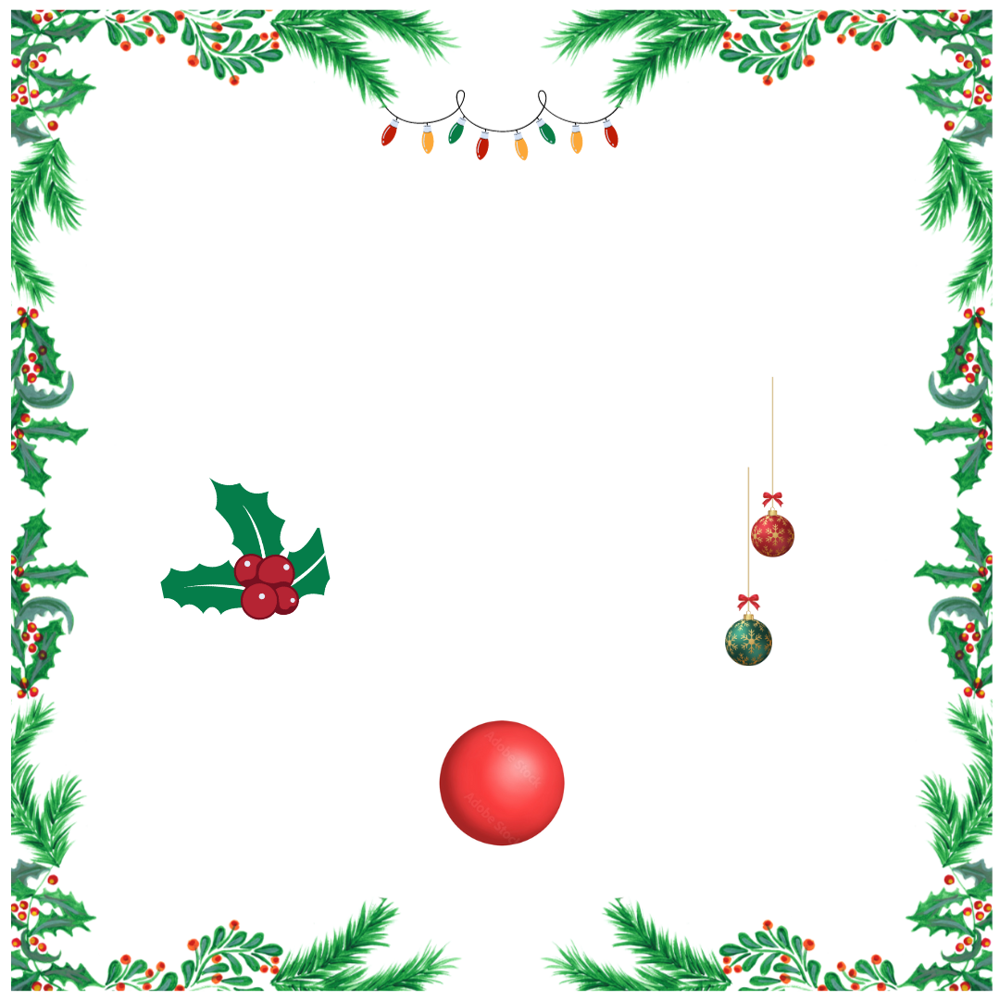

A strong, rich, American stout, dry-hopped with Nelson Sauvin to impart floral and vinous qualities.I’d call it an American Stout, but BJCP style guidelines place it closer to a cat 21C beer. It will be sweeter than a Black IPA though, so you should expect a rich, hoppy stout.